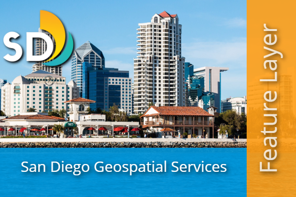

City of San Diego ArcGIS Thumbnail Builder
Create brand-consistent thumbnails for ArcGIS Online and Enterprise (Portal) content. Pick what you're making — each tool includes ready-to-use brand presets.

Item Thumbnails — 600×400 (3:2)
For maps, apps, layers, dashboards, and other portal items.